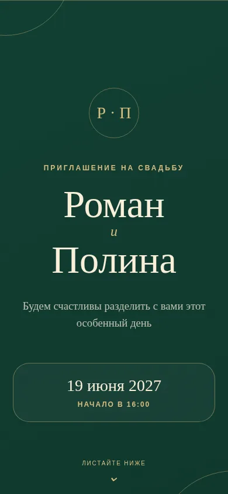
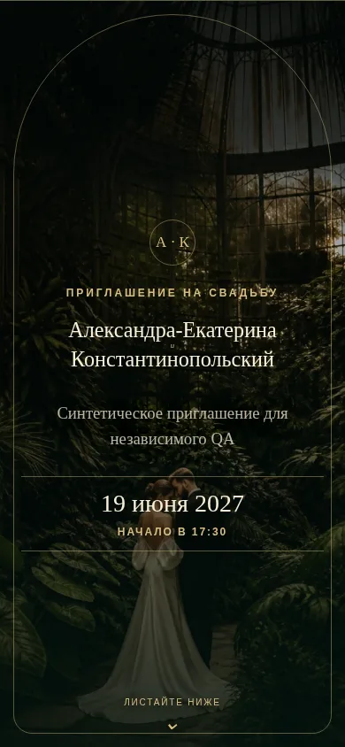
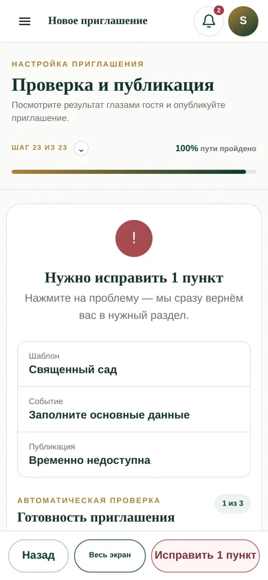
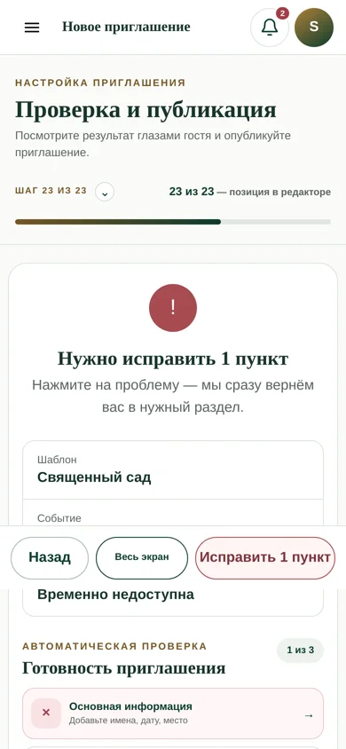

01 / ВЕРСИЯ ДЛЯ ПРОВЕРКИ
Посмотрите, что изменилось на вашем сайте
Конкретные места, скриншоты «до / после» и поле ответа для каждого пункта. Сначала сравните, затем откройте живую страницу. Если не успели проверить — так и отметьте.
ГОСТЕВОЕ ПРИГЛАШЕНИЕ · ГЛАВНЫЙ ПУНКТ
«Священный сад»: первый экран
Было: после публикации гостю показывалась почти одинаковая зелёная обложка для разных тем. Исправлено: в реальном гостевом рендере появился тематический фон и открытие; длинные имена перенесены без обрезки.


Снимки сделаны на разных вымышленных парах: сравнивайте композицию, не имена. Новый экран темнее — оцените сами.
На телефоне после кнопки «Открыть» оцените атмосферу, читаемость имён и даты, яркость фона. Пролистайте середину и конец.
Открыть гостевое приглашение ↗ Сравнить с каталогом ↗КОНСТРУКТОР · МОБИЛЬНАЯ ВЕРСИЯ
Прогресс: шаг ≠ готовность
Было: на последнем шаге показывалось «100% пути пройдено», хотя обязательные поля не заполнены и публикация недоступна. Исправлено: теперь отдельно видно «23 из 23 — позиция в редакторе» и ниже — автоматическую проверку готовности.


На телефоне откройте конструктор и в меню шагов выберите шаг 23. Понятно ли, что «23 из 23» — место в редакторе, а не готовое приглашение? Видно ли, что нужно исправить?
Открыть конструктор ↗ОСТАЛЬНЫЕ ТЕМЫ
Пять других гостевых обложек
То же исправление тематического первого экрана применено к пяти действующим темам. Это не новые отдельные шаблоны; середина и конец пока не получили уникальную арт-дирекцию для каждой темы.
НАВИГАЦИЯ · МЕЛКОЕ ИСПРАВЛЕНИЕ
«К шаблонам» при регистрации
Было: ссылка на выбор шаблонов могла вернуть не в нужное место лендинга. Исправлено: «К шаблонам» и «Изменить» возвращают к каталогу. Это изменение адреса ссылки, не новый визуальный дизайн, поэтому фальшивое «до/после» не показываем.
На странице регистрации нажмите «К шаблонам». Вы должны оказаться у выбора дизайна на лендинге. Регистрационные данные не вводите — это демо.
Проверить ссылку ↗ВАШ ОТВЕТ
Ничего не пропустим
«Сохранить пункт» запоминает ответ только в этом браузере. Чтобы отзыв дошёл до меня, отметьте решение в каждом из четырёх пунктов (можно «Не проверял») и нажмите «Передать отзыв». Откроется заполненная форма приватного GitHub-репозитория — там останется нажать Submit new issue. Копировать текст не нужно; для GitHub потребуется ваш вход.
Не пишите личные данные гостей, пароли или реквизиты. Отправка отзыва не разрешает публикацию на основном домене.
После отправки можете написать здесь просто «отправил» — я открою новый отзыв и разберу каждый пункт. Если GitHub не открылся, сохранённые ответы останутся в этом браузере.